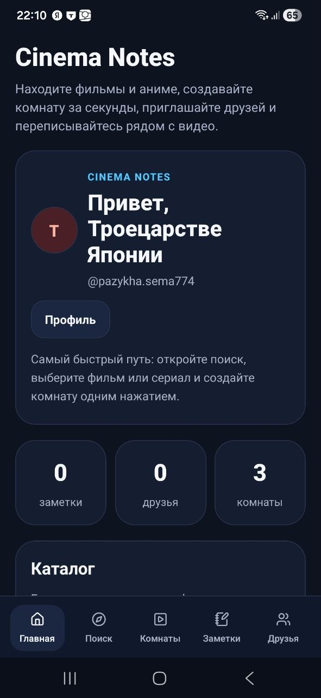
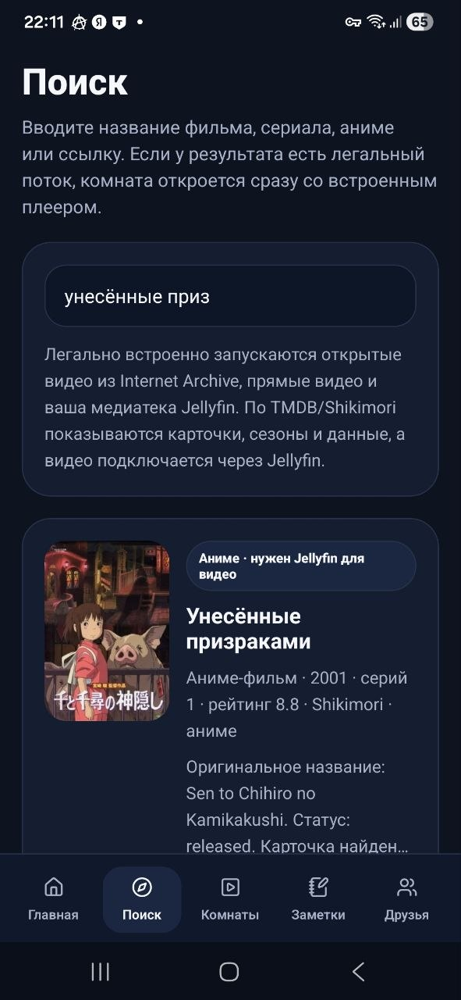
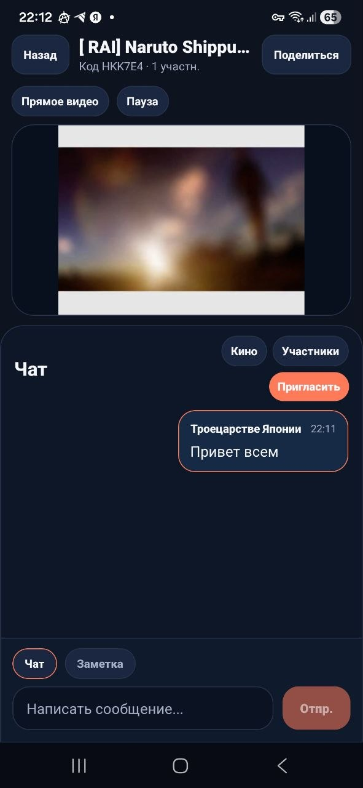

Android / Fullstack
Cinema Notes
Приложение для совместного просмотра, комнат, профилей друзей и заметок по фильмам, сериалам и аниме.
- Собран Android UX: поиск, комнаты, друзья, заметки, профиль и release flow.
- Результат: APK-релизы, проектная страница и проверки lint / TypeScript.